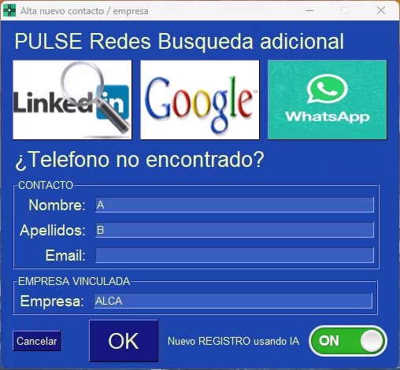

- centralita teamleader ia
- transcripción automática llamadas
- openrouter gemini
- crm teamleader
- inteligencia artificial llamadas
- transcripción voz a texto
- google gemini 2.5
- resumen automático llamadas
- software call center ia
- transcripción ia openrouter
- grabación llamadas automática
- integración crm telefonía aliases:
- /guia-completa
- /manual-usuario
- /centralita-ia
- /transcripcion-ia
- /crm-teamleader-ia description: Descubre Centralita Teamleader con IA: transcripción automática de llamadas con Google Gemini, resúmenes inteligentes y sincronización total con Teamleader CRM. Ahorra 10 minutos por llamada. tags:
- teamleader
- ia
- openrouter
- transcripción
- gemini
- crm
- automatización status: published
La integración de Centralita Teamleader con inteligencia artificial transforma completamente tus comunicaciones telefónicas, permitiéndote mejorar la gestión del tiempo y los recursos con automatización total.
🚀 ¿Qué hace Centralita Teamleader?
Funcionalidades Principales
Centralita Teamleader es una aplicación de escritorio para Windows que se ejecuta en segundo plano y automatiza todo el flujo de tus llamadas:
- 📞 Detección automática de llamadas: Sin intervención manual
- 🎙️ Grabación de audio: Alta calidad de llamada completa
- 🤖 Transcripción con IA: Resúmenes automáticos estructurados
- 📊 Sincronización con Teamleader: Apertura automática de fichas
- 📝 Creación de notas: Registro automático en el CRM
- 🔍 Búsqueda de contactos: Por número de teléfono
¿Cómo Funciona?
Llamada entrante/saliente
↓
Centralita detecta automáticamente
↓
Busca contacto/empresa en Teamleader
↓
Abre ficha en navegador
↓
Inicia grabación de audio
↓
Al colgar, transcribe con IA
↓
Crea nota automática en Teamleader
Resultado Final
Tienes un registro completo de cada llamada con resumen estructurado, puntos clave, decisiones tomadas y siguientes pasos, todo sin escribir una sola palabra manualmente.
🤖 Transcripción con Inteligencia Artificial
¿Qué es OpenRouter?
OpenRouter es el servicio que proporciona la inteligencia artificial para transcribir tus llamadas. Centralita utiliza modelos avanzados como Google Gemini 2.5 para:
- 🎧 Transcribir audio: Convertir voz a texto con alta precisión
- 📋 Generar resúmenes: Extraer los puntos más importantes
- 🎯 Identificar decisiones: Capturar compromisos y acuerdos
- ✅ Extraer acciones: Detectar siguientes pasos y responsables
- 🏷️ Asignar etiquetas: Categorizar llamadas automáticamente
Información que Genera la IA
Cada llamada transcrita genera un resumen estructurado con:
1. Resumen Ejecutivo
Breve descripción de la llamada en 2-3 frases que captura la esencia de la conversación.
Ejemplo:
"Cliente llama para consultar presupuesto de jardinería mensual. Tiene jardín de 200m² y presupuesto máximo €200/mes. Interesado en servicio semanal los viernes por la mañana."
2. Puntos Clave
Los temas principales discutidos durante la llamada.
Ejemplo: - Cliente tiene jardín de 200m² en zona norte - Necesita mantenimiento mensual (corte, poda, limpieza) - Preferencia por servicio semanal (viernes por la mañana) - Presupuesto máximo: €200/mes
3. Decisiones Tomadas
Acuerdos y compromisos alcanzados.
Ejemplo: - Enviar presupuesto en 24h (Ana, mañana 10:00) - Incluir servicio semanal en lugar de quincenal - Primera visita gratis para evaluación
4. Siguientes Pasos
Acciones concretas a realizar, incluyendo responsable y fecha.
Ejemplo: - Enviar presupuesto (Ana, mañana 10:00) - Agendar visita de evaluación (Juan, viernes 19/03 10:00) - Llamada de seguimiento (Ana, lunes 22/03 15:00)
5. Objeciones o Preocupaciones
Dudas o preocupaciones expresadas por el cliente.
Ejemplo: - Preocupación por precio: "¿Hay descuento por anualidad?" - Competencia: "Otra empresa me cobró €150"
6. Información de Contacto
Datos personales mencionados durante la llamada.
Ejemplo: - Nombre: Juan García López - Teléfono: +34 612 345 678 - Email: juan.garcia@email.com - Dirección: Calle Mayor 123, 28001 Madrid
7. Etiquetas Automáticas
Palabras clave para categorizar y buscar llamadas posteriormente.
Ejemplo:
[presupuesto, visita agendada, interesado, jardinería]
💰 Costes de la Transcripción IA
Modelo de Precios de OpenRouter
Los costes se basan en el consumo de tokens (fragmentos de texto procesados por la IA).
| Modelo | Coste por 1M tokens | Coste por llamada (5 min) | Coste por 100 llamadas |
|---|---|---|---|
| Gemini 2.5 Flash Lite | $0.07 | $0.02 - $0.03 | $2 - $3 |
| Gemini 2.5 Flash | $0.15 | $0.04 - $0.06 | $4 - $6 |
| GPT-4o | $2.50 | $0.15 - $0.20 | $15 - $20 |
Recomendación
El modelo Gemini 2.5 Flash Lite ofrece el mejor equilibrio calidad/precio para uso diario. GPT-4o solo es necesario para reuniones críticas de alta importancia.
Control de Gastos
Puedes establecer un límite de gasto mensual en OpenRouter:
- Inicia sesión en https://openrouter.ai/
- Navega a "Settings" → "Billing"
- Establece "Monthly spending limit": $10, $20, $50, etc.
- Recibirás una alerta cuando alcances el 80% del límite
Ejemplo de cálculo
Una empresa con 50 llamadas/semana (200 llamadas/mes): - Modelo Gemini 2.5 Flash Lite: ~$4-6/mes - Ahorro de tiempo: 10 horas/mes en notas manuales - ROI: El coste de la IA se recupera con el tiempo ahorrado
⚙️ Requisitos del Sistema
Sistema Operativo
- Windows 10 o superior (Windows 11 recomendado)
- Espacio en disco: Mínimo 50 MB
- Memoria RAM: Mínimo 2 GB (4 GB recomendado)
- Conexión a internet: Para integración con APIs
Integraciones Disponibles
Integración con Teamleader
- ✅ Sincronización de contactos
- ✅ Sincronización de empresas
- ✅ Creación automática de notas
- ✅ Búsqueda por número de teléfono
- ✅ Apertura automática de fichas
Integración con OpenRouter
- ✅ Transcripción de voz a texto
- ✅ Resumen automático de llamadas
- ✅ Extracción de puntos clave
- ✅ Identificación de decisiones y acciones
- ✅ Generación de etiquetas
Integración con Android (Opcional)
- ✅ Detección automática de llamadas
- ✅ Emparejamiento con aplicación JustRemotePhone
- ✅ Notificaciones en tiempo real
- ✅ Funciona en segundo plano
🎯 Interfaz de Usuario
Icono en la Bandeja del Sistema
Tras la instalación, verás el icono de Centralita en la esquina inferior derecha de Windows:

Colores del icono: - 🟢 Verde: Sistema listo, esperando llamadas - 🔴 Rojo: Grabación activa - 🟡 Amarillo: Procesando IA
Botón Izquierdo - Búsqueda Rápida
Click izquierdo sobre el icono abre la pantalla de búsqueda:

Uso: 1. Introduce un número de teléfono 2. Click en "Buscar" 3. Si el contacto existe en Teamleader, se abrirá su ficha 4. Si no existe, se abrirá el formulario de alta
📖 Guía de Altas
Para instrucciones detalladas sobre cómo crear nuevos contactos/empresas, consulta: Creación de Nuevos Registros

Botón Derecho - Menú Completo
Click derecho sobre el icono muestra el menú de opciones:

Opciones del Menú
🔍 Buscar
Abre la pantalla de búsqueda manual (misma función que click izquierdo)
📞 Último Teléfono
Usa el último teléfono introducido manualmente o capturado con la aplicación Android
⚙️ Configuración
Abre la interfaz web de configuración con múltiples secciones: - Idioma: Español, Inglés, Francés - API Teamleader: Configurar credenciales OAuth2 - IA OpenRouter: Configurar API key y modelo - Grabación: Modo interno o OBS Studio - Emparejamiento Android: Configurar conexión
📖 Guía de Configuración
Para detalles completos de configuración, consulta: Pantalla de Configuración
🎨 Aspecto
Personaliza los colores de Centralita con casi 50 temas disponibles: - DarkBlue16, DarkGrey16, DarkBlack1 (temas oscuros) - LightGreen, LightBlue, LightGrey (temas claros) - HotDogStand (estilo retro)
❌ Salir
Cierra la aplicación de forma controlada
🔄 Flujo Completo de una Llamada
Escenario: Llamada Entrante de Cliente Existente
1️⃣ TELÉFONO SUENA
Cliente: +34 612 345 678
2️⃣ CENTRALITA DETECTA LLAMADA
• Estado: OffHook (teléfono descolgado)
• Número identificado automáticamente
3️⃣ BÚSQUEDA EN TEAMLEADER
• Busca contacto por teléfono
• Busca empresa por teléfono
• ✅ Encontrado: Juan García López
4️⃣ APERTURA AUTOMÁTICA DE FICHA
• Navegador abre ficha de Teamleader
• Usuario ve historial completo del cliente
• Últimas notas, deals, información relevante
5️⃣ INICIO DE GRABACIÓN
• Icono se pone ROJO (grabando)
• Audio se guarda en alta calidad
6️⃣ CONVERSACIÓN
• Usuario habla con cliente con contexto completo
• No necesita buscar información manualmente
7️⃣ TELÉFONO COLGADO
• Estado: OnHook (teléfono colgado)
• Grabación detenida
8️⃣ TRANSCRIPIÓN CON IA
• Audio enviado a OpenRouter
• Modelo Gemini 2.5 Flash Lite procesa
• Genera resumen estructurado (30-60 segundos)
9️⃣ CREACIÓN DE NOTA EN TEAMLEADER
• Nota creada automáticamente en ficha del cliente
• Incluye: resumen, puntos clave, decisiones, siguientes pasos
• URL de nota guardada en Centralita
🔟 NOTIFICACIÓN AL USUARIO
• Balloon tip: "✅ Nota creada en Teamleader"
• Icono vuelve a VERDE (listo para próxima llamada)
Resultado
El usuario no ha escrito NADA manualmente. Todo el proceso ha sido automático desde que sonó el teléfono hasta que se creó la nota.
💡 Ventajas y Desventajas
✅ Ventajas
| Ventaja | Descripción |
|---|---|
| Ahorro de tiempo | Elimina notas manuales (~10 min/llamada) |
| Sin cambio de operador | Funciona con tu operador actual |
| Automatización total | Detección, grabación y transcripción automáticas |
| Integración perfecta | Sincronización nativa con Teamleader |
| Resúmenes estructurados | Información organizada y fácil de consultar |
| Búsqueda rápida | Encuentra cualquier llamada en segundos |
| Mayor productividad | Los agentes pueden prepararse antes de contestar |
| Mejor servicio al cliente | Contexto completo de cada cliente |
⚠️ Limitaciones
| Limitación | Solución |
|---|---|
| Solo compatible con Android para detección automática | Usar entrada manual de número para iOS |
| Requiere conexión a internet | Para transcripción IA y sincronización CRM |
| Coste de OpenRouter | ~$0.02-0.03 por llamada (2-3 céntimos) |
| Solo disponible en Windows | No hay versión Mac o Linux actualmente |
Alternativa para iOS
Si usas iPhone, puedes introducir manualmente el número en Centralita después de la llamada. El sistema buscará en Teamleader y creará la nota automáticamente.
🎓 Casos de Uso
Caso 1: Empresa de Servicios con 5 Agentes
Problema: Los agentes pierden 2-3 minutos buscando información del cliente antes de cada llamada.
Solución: Centralita abre automáticamente la ficha del cliente antes de que el agente conteste.
Resultado: - Ahorro de 2-3 min por llamada = ~30 horas/mes - Agentes mejor preparados para las conversaciones - Aumento del 15% en tasa de conversión
Caso 2: Call Center con 100 Llamadas Diarias
Problema: Los operarios no escriben notas después de cada llamada por falta de tiempo.
Solución: Centralita transcribe y crea notas automáticamente.
Resultado: - 100% de llamadas con registro detallado - Mejor seguimiento de clientes - Recuperación de información histórica instantánea
Caso 3: PYME con Un Solo Usuario
Problema: El propietario no tiene tiempo para escribir notas después de cada llamada.
Solución: Centralita automatiza todo el proceso sin intervención.
Resultado: - Propietario se enfoca en atender clientes - Registro completo de todas las interacciones - Profesionalidad aumentada
🔧 Solución de Problemas
Problema: Centralita no detecta las llamadas
Causa: Emparejamiento Android no configurado o app JustRemotePhone no ejecutándose.
Solución: 1. Verifica que JustRemotePhone está ejecutándose en Windows 2. Verifica que la app en Android está ejecutándose 3. Realiza una llamada de prueba
📖 Guía de Emparejamiento
Consulta: App-Call-remoto - Guía Completa
Problema: La transcripción es de mala calidad
Causa: Audio de mala calidad o ruido ambiental.
Solución: 1. Usa un auricular con micrófono de calidad 2. Realiza llamadas en entorno silencioso 3. Cambia a modelo GPT-4o para mayor precisión
Problema: No se crea la nota en Teamleader
Causa: API de Teamleader no configurada o conexión perdida.
Solución: 1. Verifica credenciales OAuth2 en configuración 2. Re-autoriza la aplicación si es necesario 3. Comprueba conexión a internet
📞 Soporte y Recursos
Soporte Técnico
- Web: https://alca.co/
- Email: soporte@alcatic.com
- Horario: Lunes a Viernes, 9:00 - 18:00 (CET)
Recursos Adicionales
- Documentación completa: Wiki de Centralita
- Vídeos tutoriales: Canal de YouTube
- Guía de inicio rápido: Inicio Rápido
- Configuración API: Api Teamleader
🚀 Próximos Pasos
Una vez instalada Centralita Teamleader:
- Realiza llamadas de prueba
- Verifica que la detección funciona
- Comprueba la calidad de transcripción
-
Valida que las notas se crean en Teamleader
-
Personaliza la configuración
- Ajusta el modelo de IA según necesidades
- Personaliza los prompts de transcripción
-
Configura temas y colores
-
Forma a tu equipo
- Enseña a los agentes a usar el sistema
- Comparte mejores prácticas
- Recopila feedback para mejoras
✅ Conclusión
Centralita Teamleader con IA transforma la gestión de llamadas de tu empresa:
- ✅ Automatización total: De la detección a la nota en Teamleader
- ✅ Transcripción con IA: Resúmenes estructurados sin escribir nada
- ✅ Ahorro de tiempo: ~10 minutos por llamada
- ✅ Mejor servicio al cliente: Contexto completo antes de contestar
- ✅ Registro completo: Ninguna llamada sin documentar
Con una pequeña inversión mensual en OpenRouter (~$2-6 para 200 llamadas), tu empresa puede aumentar significativamente la productividad y profesionalidad en la gestión de llamadas.
¿Listo para empezar?
Descarga Centralita Teamleader y comienza a optimizar tus llamadas en menos de 20 minutos: 📥 Descargar Ahora